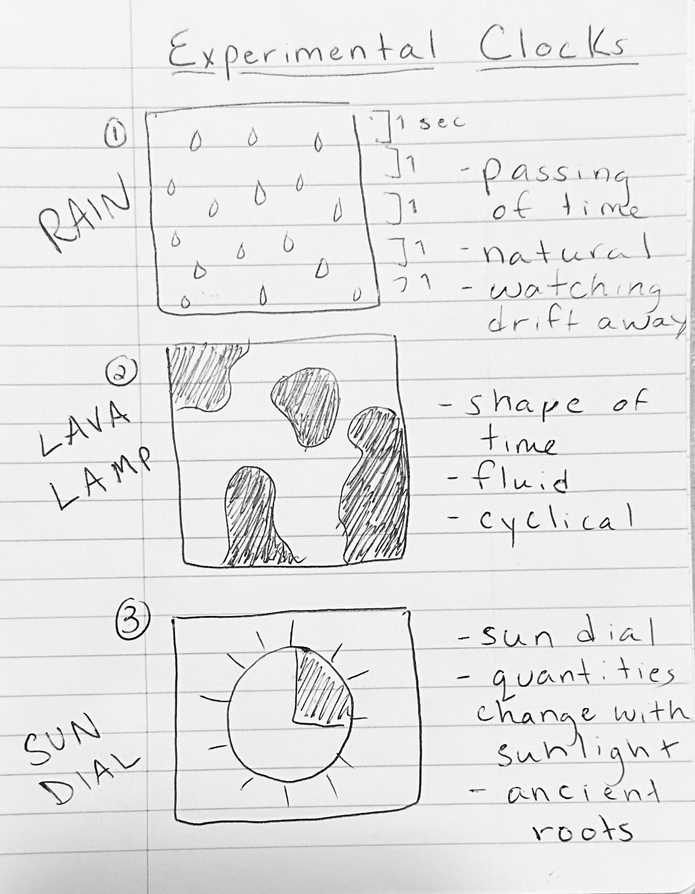

RAIN CLOCK
Description
For this project, my objective was to craft an innovative clock that challenges traditional notions of time measurement. With the aim of offering a fresh and unique outlook on the passage of time, I conceptualized "Rain Clock" as a tool to facilitate a shift in perspective.
Reflection
In an effort to explore what time looks like outside the confines of a traditional clock system, I designed an experimental clock using code to help users envision time in alternative ways. The experimental clock takes the form of a rain shower, with each passing second embodying another drop of rain. After sketching out 3 initial ideas, I decided to move forward with the rain shower because it emitted the most natural essence to me, and the passing of time is the most natural phenomenon of all.
